Nick Marchuk and Angela Mercurio spend their summers hand-packaging 300 electronic kits for Northwestern engineering students — a process averaging just five kits per person per hour. As part of a four-person DTC team, I led the development of a redesigned assembly workflowthat replaced bagging processes with a cart-and-cup system, reducing labor time significantly. This project reaffirmed something I already suspected about myself: I am drawn to human-centered processes, and I find genuine satisfaction in locating and analyzing decisions that were made once and never questioned or revisited.
Problem Statement
Nick and Angelo Mercurio need process change recommendations to reduce the packaging time of 300 circuit kits for Northwestern Engineering students.
Methodology
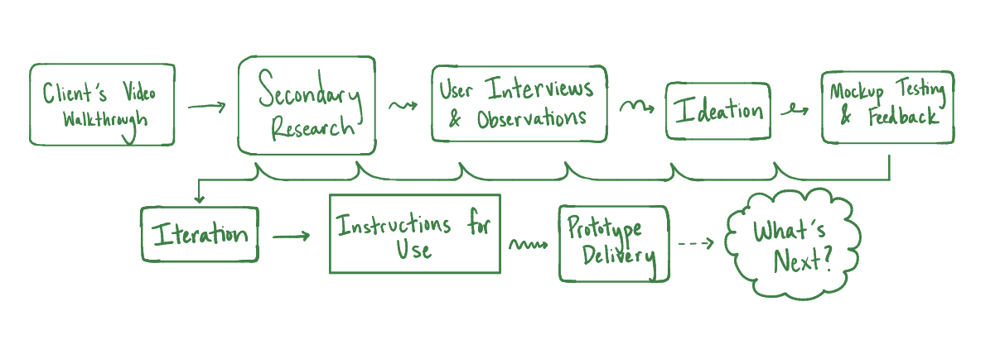
The Pain Points
I took the lead on developing user interview guides and observational situations to come away with optimal insights on Nick's current processes. From our initial partner interview and observation session, we identified the most time-consuming and physically straining steps:
- Resistors: Cut by hand from a spool using scissors — 11 different values, 10 resistors each — resulting in hand cramping and frequent miscounts
- Plastic bags: Four small snack-size bags per kit, each needing to be opened, carefully filled, and resealed — an awkward, slow process
- LEDs: Picked out one by one from loose bins by color, poked hands, and were frequently miscounted
- Assembly flow: Nick walked around a large table holding a kit box, picking up one component at a time — an inefficient circuit that multiplied with every kit
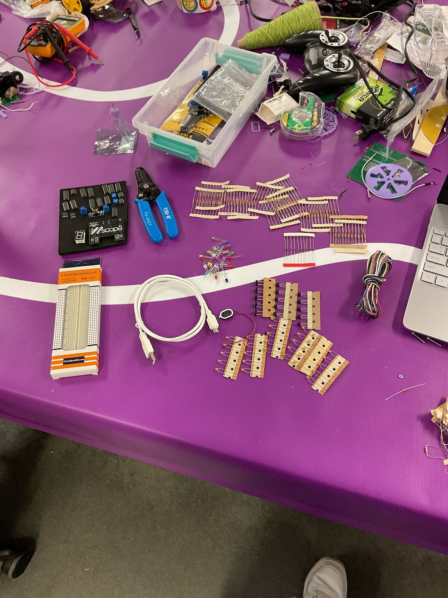
This project is where I discovered my love for introducing purposeful design to human-centered processes. Creating an answer to "why is this method used?" is an assignment I found surprisingly enthralling. Asking questions within the gap of "how it's done" and "how it could be done" is exactly where I want to work.
From Observation to Mockups
We brought four mockup concepts to Nick for feedback based on our observations: a resistor cutter, a wearable workspace tray, a packaging change, and an LED sorter. Nick tested each one. The user testing guide and interview strategies I implemented facilitated meaningful conversation to understand benefits and shortcomings of our mockup's through our user's eyes.
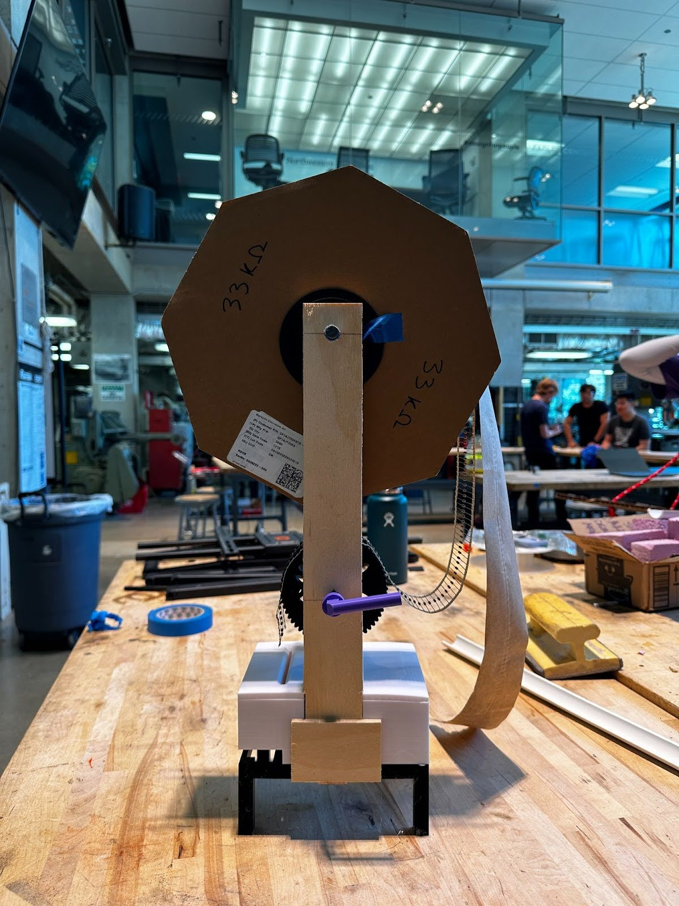
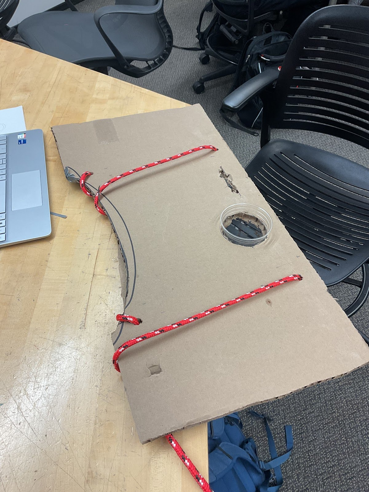
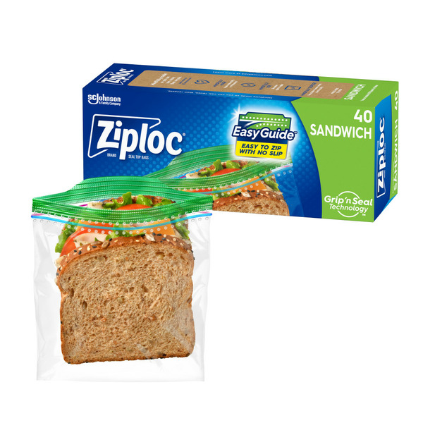
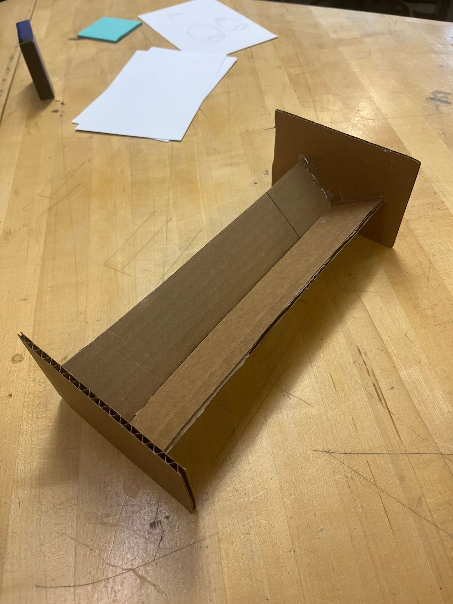
Of these mockups, three of four concepts proved to be practical for Nick's implementation, the resistor cutter, the workspace tray, and the packaging change. While some concepts were liked, Nick raised concerns with the packaging change's end-user experience and the ability to move around the space while sporting the Wearable Workspace. So, the tray and packaging mockups were iterated to increase maneuverability and reliability respectively in the final assembly flow.
Design Requirements
After partner interviews, observation sessions, and mockup feedback, any changes made to the packaging workflow had to work towards all three design requirements:
- Increase total efficiency from five kits per person per hour
- Safe to use without strain from repetition
- Optimize particular component packaging method by reducing time for
Solution
Our team delivered two solutions. I led the development of the Assembly Strategy. The Resistor Cutter — an automated Raspberry Pi-powered device — was developed primarily by my teammate Taewon and represents a significant technical deliverable. While it was ideated together based on team insights to best address the design requirements, Taewon took the lead on product development.
A redesigned packaging workflow using a rolling cart, solo cups, and sandwich-sized bags to dramatically reduce physical repetition and setup time.
An automated device that cuts resistor strips to length on command, allowing Nick and Angela to step away and work on other tasks while it runs.
The Assembly Strategy
The core insight behind the assembly strategy was simple: reduce the number of trips, reduce the number of bag openings, and reduce the physical setup for each kit. Three components made this possible together:
- The Bag Change
- The Cup Grid
- The Cart
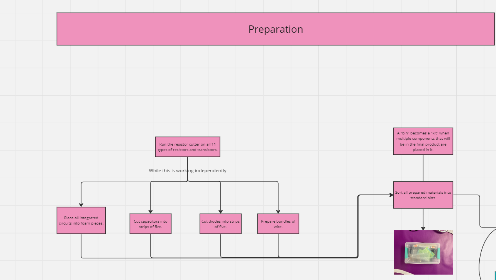
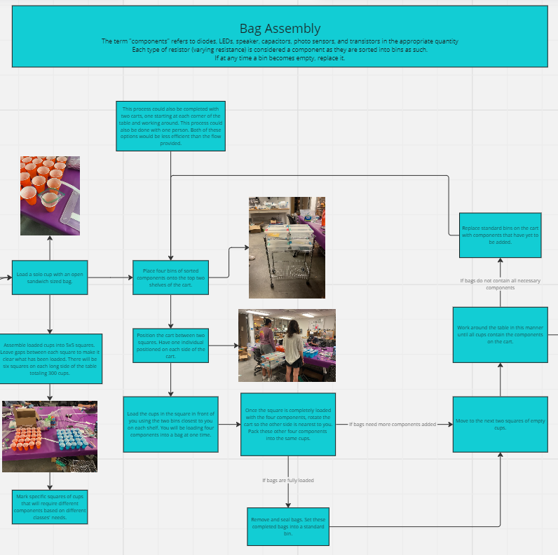
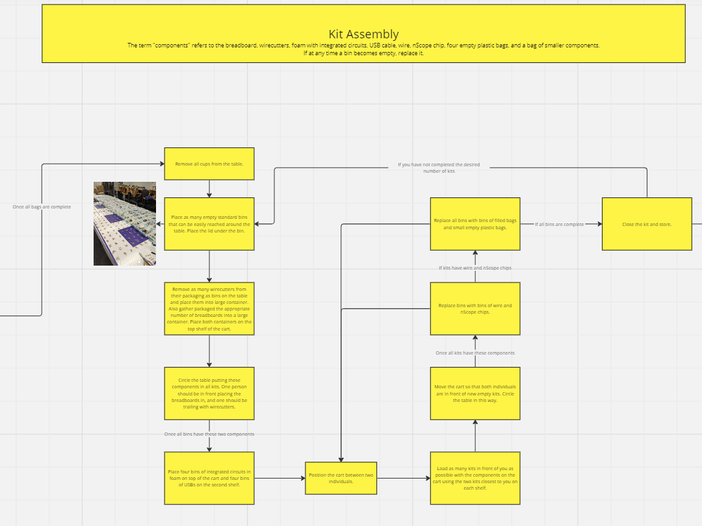
Our Final Deliverable: the Full Assembly Flowchart
The Bag Change
The first change was replacing four small snack-sized bags with one sandwich-sized bag. Previously, Nick had to open, fill, and seal four separate bags per kit, carefully manipulating components into the narrow opening. One larger bag limits this process to a single streamlined open-and-close.
Four empty small bags are still included in each kit so students can organize their own components, preserving the end-user experience without the packaging burden.
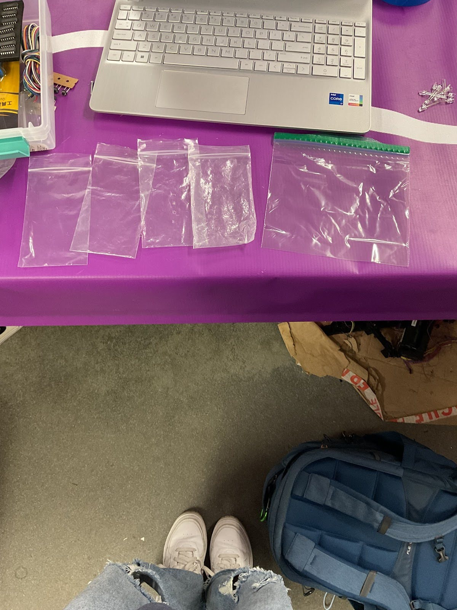
The Cup System
Solo cups act as hands-free bag holders. Nick never has to hold a bag open while filling it; he now has both hands free to drop in components. The grid of 25 cups laid out also more visibly tracks component progression compared to Nick's previous process.
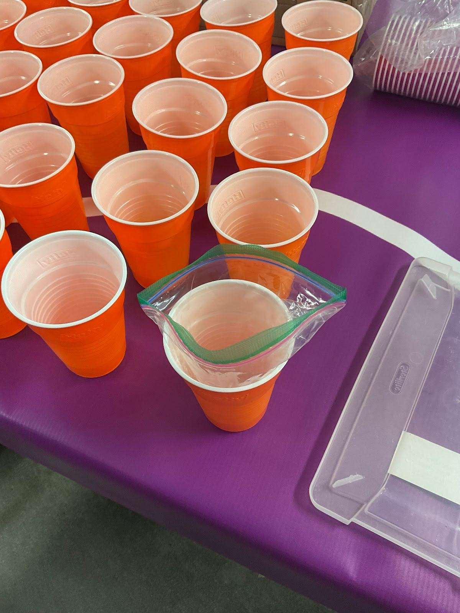
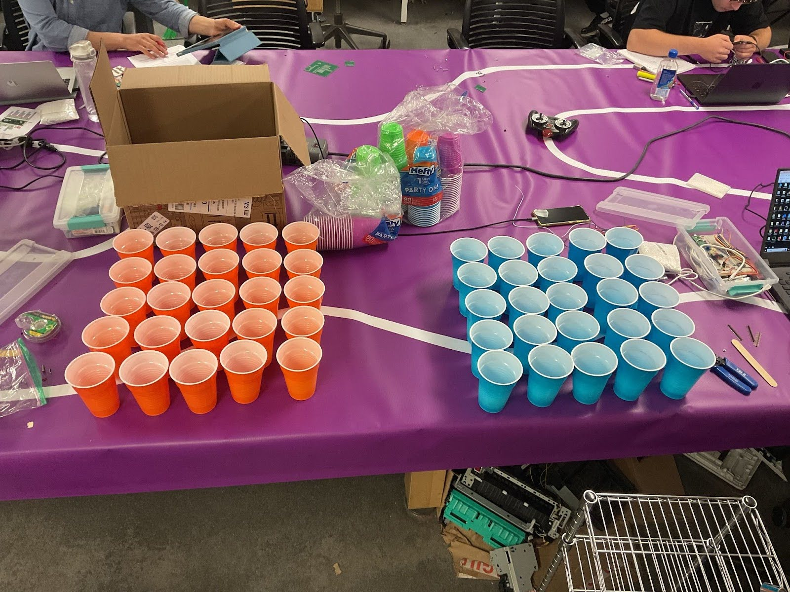
The Cart
A table-height rolling cart carries up to eight bins of components at once. Two people position themselves on opposite sides of the cart, each loading their 25 cups with the four bins on their side. When those components are loaded, the cart flips to load the other four components. The cart eliminates trips between a central supply and the kits that defined the old process.
Workflow Changes Summary
| Task | Old Method | New Method |
|---|---|---|
| Bags per kit | 4 small bags — open, fill, seal each | 1 sandwich bag — open, fill, seal once |
| Bag filling | Hold narrow-mouthed bag open with one hand while filling | Cup holds large-mouthed bag open — both hands free |
| Component transport | Walk around table carrying 1 component bin at a time | Cart carries 8 bins; 2 people load simultaneously |
| Resistor cutting | Hand-cut with scissors, prone to miscounting and cramping | Automated resistor cutter runs independently in background while other tasks are completed |
What's Next
The assembly strategy was designed for immediate implementation; Nick and Angela could adopt it the next time they packed kits. Time trials comparing the two methods would be the next step in validating the solution. From there additional time analysis could expose bottlenecks and pain points for further ideation and iteration. The resistor cutter, as a functional prototype, had several identified areas for technical improvement before it was ready for packing.
For Me
I've always been optimizing my own processes: packing graduation thank yous, my morning routine, doing my laundry. This project confirmed that analyzing and streamlining human-centered processes is something I genuinely enjoy, and can be done professionally. What energized me most wasn't the solution; but the process of noticing the assembly flow that had never really been designed, just accumulated - how things had always been done. Peeling back those unexamined decisions and asking "why is this the method?" is where I find the most interesting design problems. And the answers, more often than not, require initimately understanding how the person living inside the process sees their work — not just observing it from the outside.